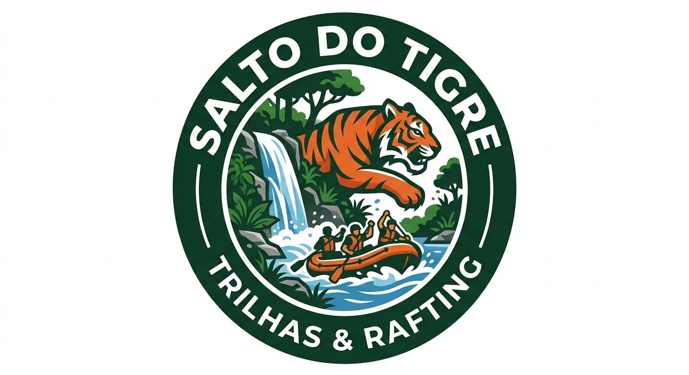

Localizada em meio à natureza exuberante de Matinhos, a Salto do Tigre Trilhas tem como missão conectar você às melhores experiências de rafting em corredeiras, trilhas na Mata Atlântica e banhos revigorantes de cachoeira com total segurança.


Localizada em meio à natureza exuberante de Matinhos, a Salto do Tigre Trilhas tem como missão conectar você às melhores experiências de rafting em corredeiras, trilhas na Mata Atlântica e banhos revigorantes de cachoeira com total segurança.
A Salto do Tigre Trilhas nasceu em Matinhos, no litoral do Paraná, a partir da paixão por explorar as serras, trilhas preservadas e quedas d'água da região. O que começou com caminhadas guiadas até a cachoeira do Salto do Tigre cresceu e se tornou referência em ecoturismo e rafting, unindo aventura nas corredeiras e contato direto com a natureza.